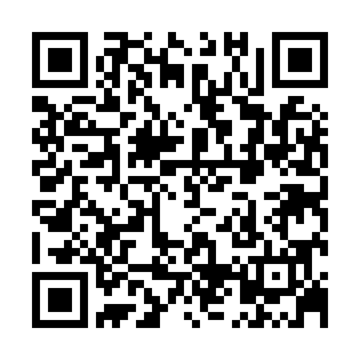
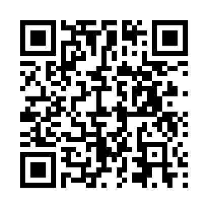

This example demonstrates how to generate a QR code in Python that encodes a URL to a ZIP file hosted on Google Drive.
import qrcode
# URL to your hosted ZIP file
data = 'https://drive.google.com/drive/folders/1A_f5AVHcrP5CMIU4lyIjuKT7YHuRsKVo?usp=share_link'
# Create QR code instance
qr = qrcode.QRCode(
version=1,
error_correction=qrcode.constants.ERROR_CORRECT_L,
box_size=10,
border=4,
)
# Add data to QR code
qr.add_data(data)
qr.make(fit=True)
# Create an image from the QR Code instance
img = qr.make_image(fill_color="black", back_color="white")
# Save the image
img.save("1st.png")
Output:

This QR code, when scanned, provides access to a ZIP file hosted on Google Drive.
Output:

This QR code contains a text message. After scanning, you can view a .txt file data embedded within the QR.
This is just showcasing how we can proceed with software for encoding and decoding data with QR files.